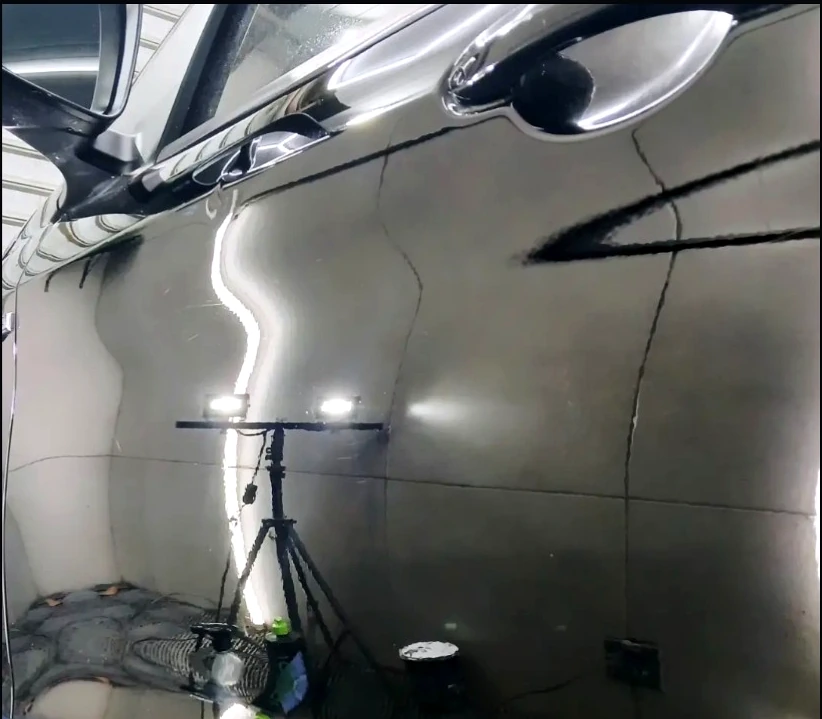
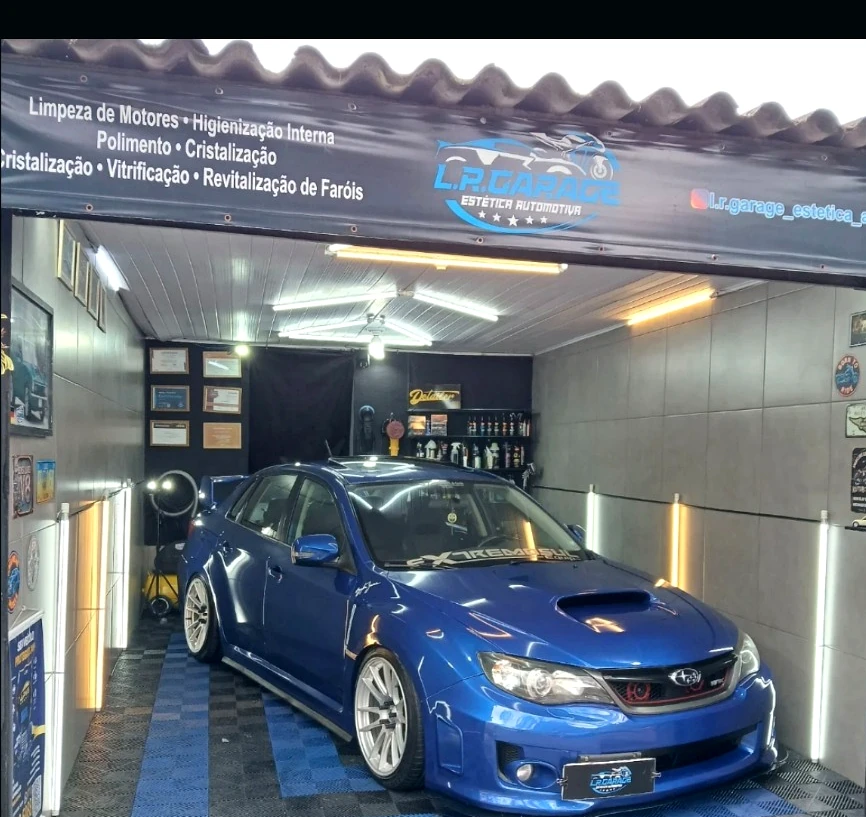
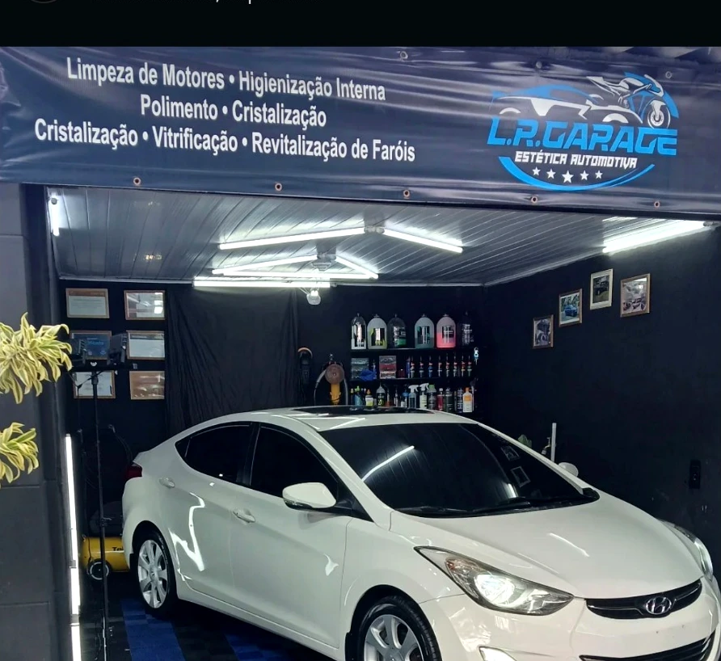
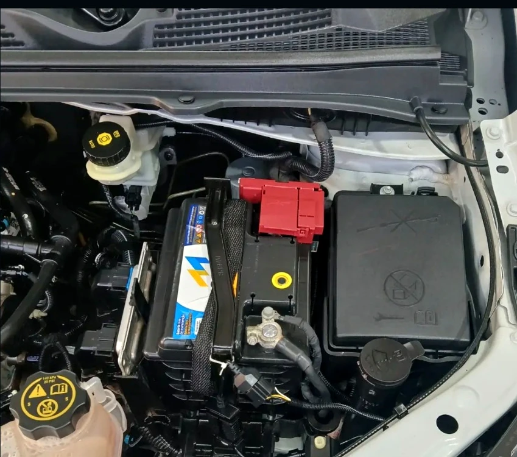
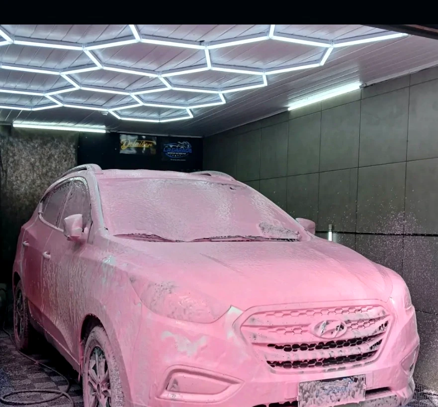
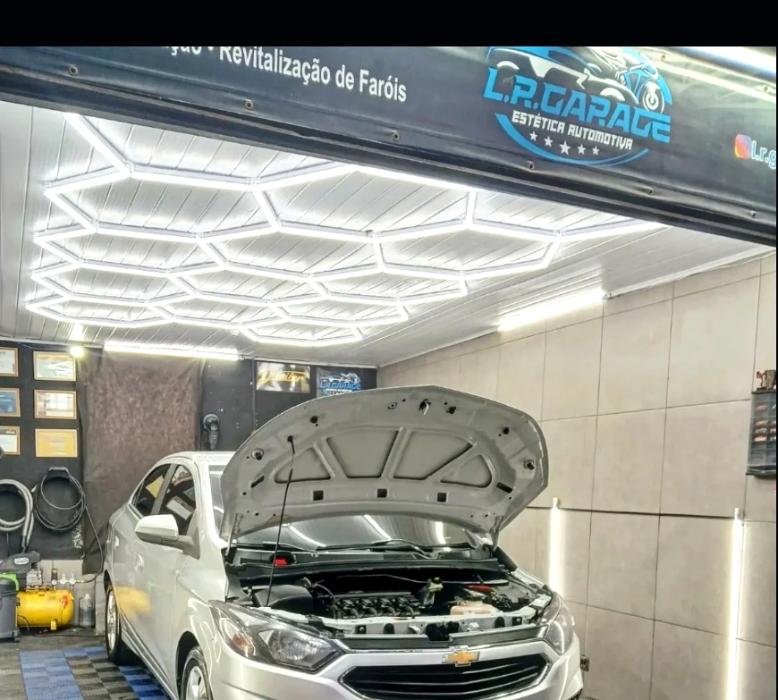
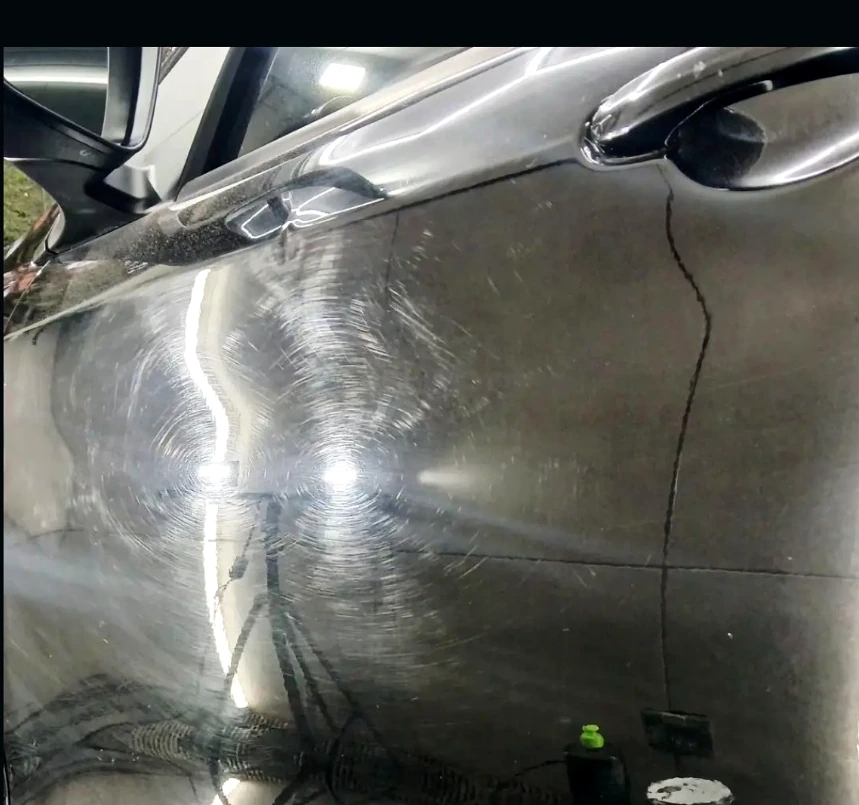
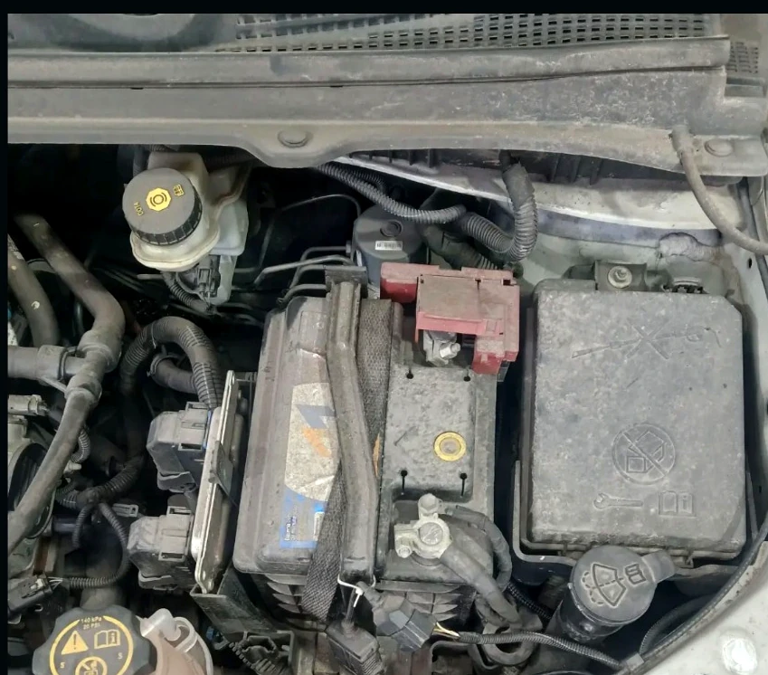

01
Polimento automotivo
Tratamento para melhorar o acabamento visual e realçar o brilho da pintura.
Consultar serviço
PRECISION DETAILINGESTÉTICA AUTOMOTIVA
Estética automotiva com atenção a cada detalhe. Limpeza, brilho e cuidado para valorizar o seu veículo.

Quem somos
Na L.R. Garage, cada veículo recebe atenção especial. Trabalhamos com serviços de estética automotiva voltados à limpeza, conservação e valorização visual do seu carro, sempre buscando um acabamento cuidadoso em cada etapa.
Serviços
Da limpeza ao acabamento, encontre o cuidado que o seu veículo precisa.

Tratamento para melhorar o acabamento visual e realçar o brilho da pintura.
Consultar serviçoCuidados para proporcionar um ambiente interno mais limpo e agradável.
Consultar serviço
Limpeza especializada do compartimento do motor, com atenção aos componentes.
Consultar serviço
Uma limpeza mais completa para renovar a apresentação do veículo.
Consultar serviço
Tratamento para melhorar o aspecto de lentes desgastadas ou opacas.
Consultar serviçoTratamento de acabamento para realçar o brilho e a aparência da pintura.
Consultar serviçoResultados reais
Arraste a linha azul para comparar o antes e o depois.

AntesDepois
AntesDepoisPortfólio
Experiência L.R. Garage
Orçamento
Fale com a L.R. Garage e solicite um orçamento para o cuidado que seu veículo merece.
Localização
Jardim Jacira — Itapecerica da Serra/SP
Ver como chegar O mapa mostra a região do Jardim Jacira.FAQ
Use o botão de orçamento e informe o modelo do seu veículo e o serviço de interesse.
Consulte a disponibilidade da garagem antes de levar o veículo.
Polimento automotivo, Vitrificação, Higienização interna, Limpeza de motores, Lavagem avançada, Revitalização de faróis, Cristalização. Consulte a equipe para escolher o cuidado indicado para seu veículo.
O prazo depende do serviço escolhido e das condições do veículo. Consulte a equipe para saber o prazo estimado.
Envie fotos pelo canal de atendimento e pergunte à equipe se é possível fazer uma avaliação inicial pelas imagens.